소방설비산업기사(기계) (2020-08-22 기출문제)
1과목: 소방원론
1. 어떤 기체의 확산 속도가 이산화탄소의 2배였다면 그 기체의 분자량은 얼마로 예상할 수 있는가?
- 11
- 22
- 44
- 88
(정답률: 48%)
2. 소화약제로 사용되는 물에 대한 설명 중 틀린 것은?
- 극성 분자이다.
- 수소결합을 하고 있다.
- 아세톤, 벤젠보다 증발 잠열이 크다.
- 아세톤, 구리보다 비열이 작다.
(정답률: 62%)

3. 건축물 내부 화재 시 연기의 평균 수평이동 속도는 약 몇 m/s인가?
- 0.01 ~ 0.⑤
- 0.5 ~ 1
- 10 ~ 15
- 20 ~ 30
(정답률: 76%)
4. 기계적 열에너지에 의한 점화원에 해당되는 것은?
- 충격, 기화, 산화
- 촉매, 열방사선, 중합
- 충격, 마찰, 압축
- 응축, 증발, 촉매
(정답률: 77%)
5. A급 화재에 해당하는 가연물이 아닌 것은?
- 섬유
- 목재
- 종이
- 유류
(정답률: 78%)
6. 가연성 기체의 일반적인 연소범위에 관한 설명으로서 옳지 못한 것은?
- 연소범위에는 상한과 하한이 있다.
- 연소범위의 값은 공기와 혼합된 가연성 기체의 체적 농도로 표시된다.
- 연소범위의 값은 압력과 무관하다.
- 연소범위는 가연성 기체의 종류에 따라 다른 값을 갖는다.
(정답률: 76%)
7. 물과 접촉하면 발열하면서 수소기체를 발생 하는 것은?
- 과산화수소
- 나트륨
- 황린
- 아세톤
(정답률: 58%)
8. Halon 1301의 화학식에 포함되지 않는 원소는?
- C
- Cl
- F
- Br
(정답률: 65%)
9. 위험물안전관리법령상 제3류 위험물에 해당되지 않는 것은?
- Ca
- K
- Na
- Al
(정답률: 59%)
10. 표준상태에서 44.8m3의 용적을 가진 이산화탄소가스를 모두 액화하면 몇 ㎏인가? (단, 이산화탄소의 분자량은 44 이다.)
- 88
- 44
- 22
- 11
(정답률: 47%)
11. 위험물안전관리법령상 제1석유류, 제2석유류, 제3석유류, 제4석유류를 구분하는 기준은?
- 인화점
- 발화점
- 비점
- 녹는점
(정답률: 74%)
12. 물과 반응하여 가연성인 아세틸렌 가스를 발생하는 것은?
- 나트륨
- 아세톤
- 마그네슘
- 탄화칼슘
(정답률: 59%)
13. 다음의 위험물 중 위험물안전관리법령상 지정수량이 나머지 셋과 다른 것은?
- 알킬알루미늄
- 황화린
- 유기과산화물
- 질산에스테르류
(정답률: 53%)
14. 가연물이 되기 위한 조건이 아닌 것은?
- 산화되기 쉬울 것
- 산소와의 친화력이 클 것
- 활성화에너지가 클 것
- 열전도도가 작을 것
(정답률: 66%)
15. 건축법상 건축물의 주요 구조부에 해당되지 않는 것은?
- 지붕틀
- 내력벽
- 주계단
- 최하층 바닥
(정답률: 70%)
16. 연소의 3요소에 해당하지 않는 것은?
- 점화원
- 연쇄반응
- 가연물질
- 산소공급원
(정답률: 77%)
17. 이산화탄소 소화기가 갖는 주된 소화 효과는?
- 유화소화
- 질식소화
- 제거소화
- 부촉매소화
(정답률: 77%)
18. 질소(N2)의 증기비중은 약 얼마인가? (단, 공기분자량은 29 이다.)
- 0.8
- 0.97
- 1.5
- 1.8
(정답률: 69%)
19. 다음 중 가연성 물질이 아닌 것은?
- 프로판
- 산소
- 에탄
- 암모니아
(정답률: 64%)
20. 칼륨 화재 시 주수소화가 적응성이 없는 이유는?
- 수소가 발생되기 때문
- 아세틸렌이 발생되기 때문
- 산소가 발생되기 때문
- 메탄가스가 발생하기 때문
(정답률: 67%)
2과목: 소방유체역학
21. 정상상태의 원형 관의 유동에서 주 손실에 의한 압력강하(△P)는 어떻게 나타내는가? (단, V는 평균속도, D는 관 직경, L은 관 길이, f는 마찰계수, ρ는 유체의 밀도, γ는 비중량이다.)
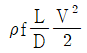
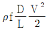
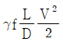
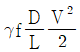
(정답률: 40%)
22. 직경이 d인 소방 호스 끝에 직경이 d/2인 노즐이 연결되어 있다. 노즐에서 유출되는 유체의 평균속도는 호스에서의 평균속도에 얼마인가?
- 1/4
- 1/2
- 2배
- 4배
(정답률: 45%)
23. 부력에 대한 설명으로 틀린 것은?
- 부력의 중심인 부심은 유체에 잠긴 물체 체적의 중심이다.
- 부력의 크기는 물체에 의해 배제된 유체의 무게와 같다.
- 부력이 작용하므로 모든 물체는 항상 유체 속에 잠기지 않고 유체표면에 뜨게 된다.
- 정지 유체에 잠겨있거나 떠 있는 물체가 유체에 의하여 수직 상 방향으로 받는 힘을 부력이라고 한다.
(정답률: 56%)
24. 압력 300kPa, 체적 1.66m3인 상태의 가스를 정압 하에서 열을 방출시켜 체적을 1/2로 만들었다. 이때 기체에 해준 일(kJ)은 얼마인가?
- 129
- 249
- 399
- 981
(정답률: 45%)
25. 송풍기의 전압이 1.47kPa, 풍량이 20m3/min, 전압효율이 0.6일 때 축동력(W)은?
- 463.2
- 816.7
- 1110.3
- 1264.4
(정답률: 46%)
26. 그림과 같이 수면으로부터 2m 아래에 직경 3m 의 평면 원형 수문이 수직으로 설치되어 있다. 물의 압력에 의해 수문이 받는 전압력의 세기(kN)는?
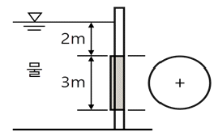
- 104.5
- 242.5
- 346.5
- 417.5
(정답률: 48%)
27. 풍동에서 유속을 측정하기 위해서 피토관을 설치하였다. 이 때 피토관에 연결된 U자관 액주계 내 비중이 0.8인 알콜이 10㎝ 상승하였다. 풍동내의 공기의 압력이 100kPa이고, 온도가 20℃일 때 풍동에서 공기의 속도(m/s)는? (단, 일반기체상수는 0.287kJ/㎏·K이다.)
- 33.5
- 36.3
- 38.6
- 40.4
(정답률: 34%)
28. U자관 액주계가 오리피스 유량계에 설치되어 있다. 액주계 내부에는 비중 13.6인 수은으로 채워져 있으며, 유량계에는 비중 1.6인 유체가 유동하고 있다. 액주계에서 수은의 높이 차이가 200mm이라면 오리피스 전후의 압력차(kPa)는 얼마인가?
- 13.5
- 23.5
- 33.5
- 43.5
(정답률: 37%)
29. 유체에 대한 일반적인 설명으로 틀린 것은?
- 아무리 작은 전단응력이라도 물질 내부에 전단응력이 생기면 정지상태로 있을 수가 없다.
- 점성이 작은 유체일수록 유동 저항이 작아 더 쉽게 움직일 수 있다.
- 충격파는 비압축성 유체에서는 잘 관찰되지 않는다.
- 유체에 미치는 압축의 정도가 커서 밀도가 변하는 유체를 비압축성유체라 한다.
(정답률: 46%)
30. 기준면에서 7.5m 높은 곳에서 유속이 6.5m/s인 물이 흐르고 있을 때 압력이 55kPa이었다. 전수두(m)는 얼마인가?
- 15.3
- 17.4
- 19.1
- 23.5
(정답률: 35%)
31. 다음 중 기체상수가 가장 큰 것은?
- 수소
- 산소
- 공기
- 질소
(정답률: 40%)
32. 펌프의 이상현상 중 펌프의 유효흡입수두(NPSH)와 가장 관련이 있는 것은?
- 수온상승 현상
- 수격 현상
- 공동 현상
- 서징 현상
(정답률: 50%)
33. 열역학 제1법칙(에너지 보존의 법칙)에 대한 설명으로 옳은 것은?
- 공급열량은 총에너지 변화에 외부에 한 일량과의 합계이다.
- 열효율이 100%인 열기관은 없다.
- 순수물질이 상압(1기압), 0K에서 결정상태이면 엔트로피는 0 이다.
- 일에너지는 열에너지로 쉽게 변환될 수 있으나, 열에너지는 일에너지로 변환되기 어렵다.
(정답률: 41%)
34. 원심 펌프의 임펠러 직경이 20㎝이다. 이 펌프와 상사한 동일한 모양의 펌프를 임펠러 직경 60㎝로 만들었을 때 같은 회전수에서 운전하면 새로운 펌프의 설계점 성능 특성 중 유량은 몇 배가 되는가? (단, 레이놀즈수의 영향은 무시한다.)
- 1배
- 3배
- 9배
- 27배
(정답률: 35%)
35. 점성계수의 MLT계 차원으로 옳은 것은?
- [M L-1T-1]
- [M L2T-1]
- [L2T-2]
- [M L-2T-2]
(정답률: 43%)
36. 수평 노즐 입구에서의 계기압력아 P1Pa, 면적이 A1m2이고, 출구에서의 면적은 A2m2이다. 물이 노즐을 통해 V2m/s의 속도로 대기 중으로 방출될 때 노즐을 고정 시키는데 필요한 힘(N)은 얼마인가? (단, 물의 밀도는 ρ㎏/m3이다.)
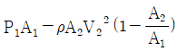
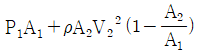
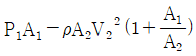
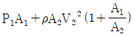
(정답률: 36%)
37. 온도 54.64℃, 압력 100kPa인 산소가 지름 10㎝인 관속을 흐를 때 층류로 흐를 수 있는 평균속도의 최대값(m/s)은 얼마인가? (단, 임계레이놀즈수는 2100, 산소의 점성계수는 23.16×10-6㎏/m·s, 기체상수는 259.75N·m/㎏·K이다.)
- 0.212
- 0.414
- 0.616
- 0.818
(정답률: 37%)
38. 단면적이 10m2이고 두께가 2.5㎝인 단열재를 통과하는 열전달량이 3㎾이다. 내부(고온)면의 온도가 415℃이고 단열재의 열전도도가 0.2W/m·K일 때 외부(저온)면의 온도(℃)는?
- 353.7
- 377.5
- 396.2
- 402.4
(정답률: 36%)
39. 뉴튼의 점성법칙과 직접적으로 관계없는 것은?
- 압력
- 전단응력
- 속도구배
- 점성계수
(정답률: 41%)
40. 관지름 d, 관마찰계수 f, 부차손실계수 K인 관의 상당길이 Le는?
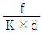
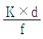
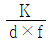
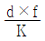
(정답률: 50%)
3과목: 소방관계법규
41. 소방시설공사업법령상 상주 공사감리의 대상 기준 중 다음 괄호 안에 알맞은 것은?
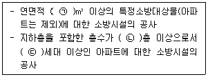
- ㉠ 30000, ㉡ 16, ㉢ 500
- ㉠ 30000, ㉡ 11, ㉢ 300
- ㉠ 50000, ㉡ 16, ㉢ 500
- ㉠ 50000, ㉡ 11, ㉢ 300
(정답률: 39%)
42. 화재예방, 소방시설 설치⋅유지 및 안전관리에 관한 법령상 시⋅도지사는 관리업자에게 영업정지를 명하는 경우로서 그 영업정지가 국민에게 심한 불편을 주거나 그 밖에 공익을 해칠 우려가 있을 때에는 영업정지처분을 갈음하여 최대 얼마 이하의 과징금을 부과할 수 있는가?
- 1000만 원
- 2000만 원
- 3000만 원
- 5000만 원
(정답률: 49%)
43. 위험물안전관리법령상 제3류 위험물이 아닌 것은?
- 칼륨
- 황린
- 나트륨
- 마그네슘
(정답률: 49%)
44. 소방기본법령상 소방신호의 종류가 아닌 것은?
- 발화신호
- 해제신호
- 훈련신호
- 소화신호
(정답률: 56%)
45. 소방기본법령상 동원된 소방력의 운용과 관련하여 필요한 사항을 정하는 자는? (단, 동원된 소방력의 소방활동 수행 과정에서 발생하는 경비 및 동원된 민간 소방인력이 소방활동을 수행하다가 사망하거나 부상을 입은 경우와 관련된 사항은 제외한다.)
- 대통령
- 소방청장
- 시·도지사
- 행정안전부장관
(정답률: 45%)
46. 화재예방, 소방시설 설치⋅유지 및 안전관리에 관한 법령상 자동화재속보설비를 설치하여야 하는 특정소방대상물의 기준으로 틀린 것은? (단, 사람이 24시간 상시 근무하고 있는 경우는 제외한다.)
- 업무시설로서 바닥면적이 1500m3 이상인 층이 있는 것
- 문화재보호법에 따라 보물 또는 국보로 지정된 목조건축물
- 노유자 생활시설에 해당하지 않는 노유자 시설로서 바닥면적이 300m3 이상인 층이 있는 것
- 수련시설(숙박시설이 있는 건축물만 해당)로서 바닥면적이 500m3 이상인 층이 있는 것
(정답률: 43%)
47. 화재예방, 소방시설 설치⋅유지 및 안전관리에 관한 법령상 소방시설관리사의 결격사유가 아닌 것은?
- 피성년후견인
- 소방기본법령에 따른 금고 이상의 실형을 선고받고 그 집행이 면제된 날부터 2년이 지나지 아니한 사람
- 소방시설공사업법령에 따른 금고 이상의 형의 집행유예를 선고받고 그 유예기간이 지난 후 2년이 지나지 아니한 사람
- 거짓이나 그 밖의 부정한 방법으로 관리사 시험에 합격하여 자격이 취소된 날부터 2년이 지나지 아니한 사람
(정답률: 47%)
48. 화재예방, 소방시설 설치⋅유지 및 안전관리에 관한 법령상 건축허가 등을 할 때 미리 소방본부장 또는 소방서장의 동의를 받아야 하는 건축물의 범위에 해당하는 것은?
- 연면적이 200m2인 노유자시설 및 수련 시설
- 연면적이 300m2인 업무시설로 사용되는 건축물
- 승강기 등 기계장치에 의한 주차시설로서 자동차 10대를 주차할 수 있는 시설
- 차고⋅주차장으로 사용되는 층 중 바닥면적이 150m2인 층이 있는 건축물
(정답률: 41%)
49. 화재예방, 소방시설 설치⋅유지 및 안전관리에 관한 법령상 특정소방대상물에 설치되어 소방본부장 또는 소방서장의 건축허가 등의 동의대상에서 제외되게 하는 소방시설이 아닌 것은? (단, 설치되는 소방시설은 화재안전기준에 적합하다.)
- 유도표지
- 누전경보기
- 비상조명등
- 인공소생기
(정답률: 37%)
50. 위험물안전관리법령상 제조소등에 전기설비(전기배선, 조명기구 등은 제외)가 설치된 장소의 면적이 300m3일 경우, 소형수동식소화기는 최소 몇 개 설치하여야 하는가?
- 1개
- 2개
- 3개
- 4개
(정답률: 50%)
51. 화재예방, 소방시설 설치⋅유지 및 안전관리에 관한 법령상 소방청장 또는 시⋅도지사가 청문을 하여야 하는 처분이 아닌 것은?
- 소방시설관리사 자격의 정지
- 소방안전관리자 자격의 취소
- 소방시설관리업의 등록취소
- 소방용품의 형식승인 취소
(정답률: 47%)
52. 화재예방, 소방시설 설치⋅유지 및 안전관리에 관한 법령상 특정소방대상물 중 교육연구시설에 포함되지 않는 것은?
- 도서관
- 초등학교
- 직업훈련소
- 자동차운전학원
(정답률: 60%)
53. 소방기본법령상 소방서 종합상황실의 실장이 서면⋅모사전송 또는 컴퓨터통신 등으로 소방본부의 종합상황실에 지체 없이 보고하여야 하는 화재의 기준으로 틀린 것은?
- 이재민이 50인 이상 발생한 화재
- 재산피해액이 50억 원 이상 발생한 화재
- 층수가 11층 이상인 건축물에서 발생한 화재
- 사망자가 5인 이상 발생하거나 사상자가 10인 이상 발생한 화재
(정답률: 50%)
54. 소방시설공사업법령상 소방본부장이나 소방서장이 소방시설공사가 공사감리결과보고서 대로 완공되었는지를 현장에서 확인할 수 있는 특정소방대상물이 아닌 것은?
- 판매시설
- 문화 및 집회시설
- 11층 이상인 아파트
- 수련시설 및 노유자시설
(정답률: 54%)
55. 화재예방, 소방시설 설치⋅유지 및 안전관리에 관한 법령상 특정소방대상물 중 숙박시설의 종류가 아닌 것은?
- 학교 기숙사
- 일반형 숙박시설
- 생활형 숙박시설
- 근린생활시설에 해당하지 않는 고시원
(정답률: 43%)
56. 위험물안전관리법령상 점포에서 위험물을 용기에 담아 판매하기 위하여 지정수량의 40배 이하의 위험물을 취급하는 장소의 취급소 구분으로 옳은 것은? (단, 위험물을 제조외의 목적으로 취급하기 위한 장소이다.)
- 이송취급소
- 일반취급소
- 주유취급소
- 판매취급소
(정답률: 56%)
57. 소방기본법령상 소방대상물에 해당하지 않는 것은?
- 차량
- 건축물
- 운항 중인 선박
- 선박 건조 구조물
(정답률: 65%)
58. 소방기본법령상 화재경계지구로 지정할 수 있는 대상지역이 아닌 것은? (단, 소방청장⋅ 소방본부장 또는 소방서장이 화재경계지구로 지정할 필요가 있다고 별도로 지정한 지역은 제외한다.)
- 시장지역
- 석조건물이 있는 지역
- 위험물의 저장 및 처리 시설이 밀집한 지역
- 석유화학제품을 생산하는 공장이 있는 지역
(정답률: 61%)
59. 소방기본법령상 국가가 시⋅도의 소방업무에 필요한 경비의 일부를 보조하는 국고보조대상이 아닌 것은?
- 소방자동차 구입
- 소방용수시설 설치
- 소방전용통신설비 설치
- 소방관서용 청사의 건축
(정답률: 52%)
60. 위험물안전관리법령상 산화성 고체이며 제1류 위험물에 해당하는 것은?
- 칼륨
- 황화린
- 염소산염류
- 유기과산화물
(정답률: 54%)
4과목: 소방기계시설의 구조 및 원리
61. 이산화탄소소화설비의 화재안전기준상 전역방출식 이산화탄소소화설비 분사헤드의 방사압력은 최소 몇 MPa 이상이 되어야 하는가? (단, 저압식은 제외한다.)
- 1.2
- 2.1
- 3.6
- 4.2
(정답률: 47%)
62. 포소화설비의 화재안전기준상 전역방출방식의 고발포용고정포방출구 설치기준 중 다음 괄호 안에 알맞은 것은?
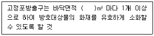
- 300
- 400
- 500
- 600
(정답률: 43%)
63. 소방대상물에 제연 샤프트를 설치하여 건물 내·외부의 온도차와 화재 시 발생되는 열기에 의한 밀도차이를 이용하여 실내에서 발생한 화재 열, 연기 등을 지붕 외부의 루프모니터 등을 통해 옥외로 배출·환기시키는 제연 방식은?
- 자연제연방식
- 루프해치방식
- 스모크 타워 제연방식
- 제3종 기계제연방식
(정답률: 53%)
64. 소화수조 및 저수조의 화재안전기준상 소화용수설비 소화수조의 소요수량이 120m3일 때 채수구는 몇 개를 설치하여야 하는가?
- 1
- 2
- 3
- 4
(정답률: 45%)
65. 물분무소화설비의 화재안전기준상 물분무헤드를 설치하지 않을 수 있는 장소 기준 중 다음 괄호 안에 알맞은 것은?
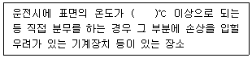
- 250
- 260
- 270
- 280
(정답률: 51%)
66. 스프링클러설비의 화재안전기준상 배관의 설치기준 중 다음 괄호 안에 알맞은 것은?
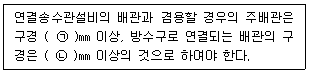
- ㉠ 65, ㉡ 80
- ㉠ 65, ㉡ 100
- ㉠ 100, ㉡ 65
- ㉠ 100, ㉡ 80
(정답률: 53%)
67. 분말소화설비의 화재안전기준상 분말소화약제의 저장용기를 가압식으로 설치할 때 안전밸브의 작동압력 기준은?
- 최고사용압력의 0.8배 이하
- 최고사용압력의 1.8배 이하
- 내압시험압력의 0.8배 이하
- 내압시험압력의 1.8배 이하
(정답률: 43%)
68. 분말소화설비의 화재안전기준상 호스릴분말소화설비의 설치 기준으로 틀린 것은?
- 소화약제의 저장용기는 호스릴을 설치하는 장소마다 설치할 것
- 방호대상물의 각 부분으로부터 하나의 호스접결구까지의 수평거리가 15m 이하가 되도록 할 것
- 소화약제의 저장용기의 개방밸브는 호스릴의 설치장소에서 수동으로 개폐할 수 있는 것으로 할 것
- 제1종 분말소화약제를 사용하는 호스릴분말소화설비의 노즐은 하나의 노즐마다 1분당 27kg을 방사할 수 있는 것으로 할 것
(정답률: 46%)
69. 피난기구의 화재안전기준상 피난기구의 설치기준 중 피난사다리 설치 시 금속성 고정사다리를 설치하여야 하는 층의 기준으로 옳은 것은? (단, 하향식 피난구용 내림식사다리는 제외한다.)
- 4층 이상
- 5층 이상
- 7층 이상
- 11층 이상
(정답률: 46%)
70. 소화기구 및 자동소화장치의 화재안전기준상 소화기구의 설치기준 중 다음 괄호 안에 알맞은 것은?
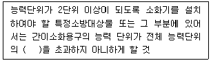
- 1/2
- 1/3
- 1/4
- 1/5
(정답률: 52%)
71. 소화수조 및 저수조의 화재안전기준상 소화수조, 자수조의 채수구 또는 흡수관투입구는 소방차가 최대 몇 m 이내의 지점까지 접근할 수 있는 위치에 설치하여야 하는가?
- 2
- 4
- 6
- 8
(정답률: 46%)
72. 스프링클러설비의 화재안전기준상 스프링클러헤드를 설치하지 않을 수 있는 장소 기준으로 틀린 것은?
- 계단실·경사로·목욕실·화장실·기타 이와 유사한 장소
- 통신기기실·전자기기실·기타 이와 유사한 장소
- 천장과 반자 양쪽이 불연재료로 되어 있는 경우로서 천장과 반자사이의 거리가 2m 미만인 부분
- 천장 및 반자가 불연재료 외의 것으로 되어 있고 천장과 반자사이의 거리가 1.5m 미만인 부분
(정답률: 44%)
73. 스프링클러설비의 화재안전기준상 가압송수장치에서 폐쇄형스프링클러헤드까지 배관 내에 항상 물이 가압되어 있다가 화재로 인한 열로 폐쇄형스프링클러헤드가 개방되면 배관 내에 유수가 발생하여 습식유수검자 장치가 작동하게 되는 스프링클러설비는?
- 건식스프링클러설비
- 습식스프링클러설비
- 부압식스프링클러설비
- 준비작동식스프링클러설비
(정답률: 56%)
74. 특별피난계단의 계단실 및 부속실 제연설비의 화재안전기준상 제연설비에 사용되는 플랩댐퍼의 정의로 옳은 것은?
- 급기가압 공간의 제연량을 자동으로 조절하는 장치를 말한다.
- 제연덕트 내에 설치되어 화재 시 자동으로, 폐쇄 또는 개방되는 장치를 말한다.
- 제연구역과 화재구역 사이의 연결을 자동으로 차단 할 수 있는 댐퍼를 말한다.
- 부속실의 설정압력범위를 초과하는 경우 압력을 배출하여 설정압 범위를 유지하게 하는 과압방지장치를 말한다.
(정답률: 34%)
75. 물분무소화설비의 화재안전기준상 66kV 이하인 고압의 전기기기가 있는 장소에 물분무헤드를 설치 시 전기기기와 물분무헤드 사이의 이격거리는 최소 몇 ㎝인가?
- 70
- 80
- 90
- 100
(정답률: 43%)
76. 이산화탄소소화설비의 화재안전기준상 이산화탄소소화설비의 가스압력식 기동장치에 대한 기준 중 틀린 것은?
- 기동용가스용기에는 충전여부를 확인할 수 있는 압력게이지를 설치할 것
- 기동용가스용기 및 해당 용기에 사용하는 밸브는 25MPa 이상의 압력에 견딜 수 있는 것으로 할 것
- 기동용가스용기에는 내압시험압력의 0.64배부터 내압시험압력 이하에서 작동하는 안전장치를 설치할 것
- 기동용가스용기의 용적은 5L 이상으로 하고, 해당 용기에 저장하는 질소 등의 비활성기체는 6.0MPa 이상(21℃ 기준)의 압력으로 충전할 것
(정답률: 47%)
77. 소화기구 및 자동소화장치의 화재안전기준상 노유자시설에 대한 소화기구의 능력단위 기준으로 옳은 것은? (단, 건축물의 주요구조부, 벽 및 반자의 실내에 면하는 부분에 대한 조건은 무시한다.)
- 해당 용도의 바닥면적 30m2 마다 능력단위 1단위 이상
- 해당 용도의 바닥면적 50m2 마다 능력단위 1단위 이상
- 해당 용도의 바닥면적 100m2 마다 능력단위 1단위 이상
- 해당 용도의 바닥면적 200m2 마다 능력단위 1단위 이상
(정답률: 40%)
78. 피난기구의 화재안전기준상 피난기구의 종류가 아닌 것은?
- 미끄럼대
- 간이완강기
- 인공소생기
- 피난용트랩
(정답률: 64%)
79. 분말소화설비의 화재안전기준상 분말소화약제 저장용기의 내부압력이 설정압력으로 되었을 때 주밸브를 개방하기 위해 설치하는 장치는?
- 자동폐쇄장치
- 전자개방장치
- 자동청소장치
- 정압작동장치
(정답률: 56%)
80. 옥외소화전설비의 화재안전기준상 옥외소화전설비의 배관 등에 관한 기준 중 호스의 구경은 몇 mm로 하여야 하는가?
- 35
- 45
- 55
- 65
(정답률: 58%)